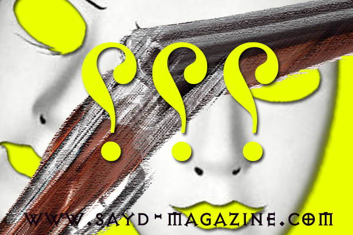

الصيّاد يعرف: البابونج وفوائده
الاسم: البابونج أو (كاموميل- عين القط) تسمية تُطلق على زهر الأقحوان المجفف ذو اللون الأبيض والأصفر الفاتح، يتميّز بنموّه السريع وبرائحته القوية والزكية وبتعدّد أنواعه. أماكن تواجد…
الاسم: البابونج أو (كاموميل- عين القط) تسمية تُطلق على زهر الأقحوان المجفف ذو اللون الأبيض والأصفر الفاتح، يتميّز بنموّه السريع وبرائحته القوية والزكية وبتعدّد أنواعه. أماكن تواجد…
مصدر الصور Katarzyna Okrzesik-Mikołajek رغم الجائحة حولنا، يتمتع مربّو الخيل هذه الأيام بمشاهد الولادات في مزارعهم...الولادة هي الملحمة الوحيدة الباقية بقاء الأزل... الخلاص من الم…
نوادي ممارسة الرماية الحربية من مسدسات وبنادق في لبنان: 1- نادي سوات: برغون- أنفه 2- نادي ساليه وبلو: الدكوانة- بيروت 3- نادي الجيش: الدكوانة- بيروت 4- نادي قوى الأمن الداخلي: بير…
يقع لبنان على ثاني أهمّ ممر للطيور في العالم، وهذا يعني أن عددًا كبيرًا من الطيور يمر فوق لبنان خلال هجرتَي الربيع والخريف. حدثان يميّزان هجرة الربيع هذه السنة وينعكسان إيجابيًّا…

لكل صياد شخصيته، وكل إختيار يعبر عن نوع شخصية صاحبه وملامحها ومزاجها.. مجلة" صيد " تقدم لك نبذة عن شخصيتك من خلال إختيارك لنوع سلاح صيدك. إذا كنت من أنصار "البومب أكشن" فأنت تحب ا…
الفروسية ليست مجرد ركوب حصان بهندام معين .. وممارسة قفز حواجز او سباق قدرة او غيره، انها حاسة كالحواس الأخرى تولد مع الإنسان، وتتداخل في كل تفاصيل حياته. وأصدق تعبير على هذا الكلا…
بعد أن قام عناصر من قوى الأمن الداخلي بتحرير محضر ضبط الإثنين الفائت بحق مدير قسم الصيد والتصوير البري في مجلة "صيد" الزميل فؤاد عيتاني أثناء مراقبته وتصويره الطيور في واجهة بيروت…
في خطوة جبارة ومضيئة وبالرغم من الظروف الاقتصادية والامنيّة التي تعصف بوطننا، أصدر البروفيسور في علم الطيور البريّة غسان جرادي بالتعاون مع رئيس جمعية حماية الطيور في لبنان/ مدير ق…
الاسم: يوسف شلال فئة الدم : فارس الجنسية : مغربي يعيش في الجزائر مكان الولادة: الحلم ويتحدث اليك بلغة الشغف اللا محدود عن عشقه للخيل والفروسية، فيجعلك تشعر بقوة شحصيته واعتزازه بق…
كان اسبوعا حافلا لسباقات لها الوقع الكبير في عالم الخيول العربية الاصيلة، والتي رسّخها مهرجان الشيخ منصور بن زايد العالمي للخيول العربي الاصيلة على مدى 11 عاما من العمل المتواصل و…
زار رئيس مركز الشرق الأوسط للصيد المستدام MESHC \ مدير قسم الصيد المسؤول في جمعية حماية الطبيعة في لبنان SPNL ادونيس الخطيب، معالي وزيرة الداخلية والبلديات السيدة ريّا الحسن ( الأ…
خلال عشرين يوم من 20 ايلول وحتى 10 تشرين اول 2019، وبالتعاون مع وزراة الداخلية، ووزارة البيئة، والمديرية العامة لقوى الأمن الداخلي، والمساعدة الخاصة لفخامة رئيس الجمهورية السيدة ك…
زار معالي وزير البيئة فادي جريصاتي وعدد من سفراء بعض الدول الأجنبية الأربعاء 8 تشرين اول2019 اعضاء من منظمة CABS الإلمانية الدولية لمكافحة ذبح الطيور، ووحدة مكافحة الصيد الجائر في…
زارت الفنانة التشكيلية منى صايغ أمس المساعدة الخاصة لفخامة رئيس الجمهورية/ رئيسة الهيئة الوطنية لشؤون المرأة اللبنانية السيدة كلودين عون وقدمت لها لوحة "اللقلق والأمومة" التي اعلن…
في خطوة هي الأولى من نوعها في لبنان والعالم العربي، قامت مجموعات من الصيادين المستدامين بتوجيه من مركز الشرق الأوسط للصيد المستدام MESHCوجمعية حماية الطبيعة في لبنانSPNL الشريك ال…
أقامت جمعية "حماية الطبيعة في لبنان-SPNL" و"مركز الشرق الأوسط للصيد المستدام-MESHC"، بالتعاون مع شركائهم المحليين والدوليين، حفلًا في مقر MESHC- الويست بقاع كونتري كلوب الأحد 8 أي…
أقامت وحدة مكافحة الصيد الجائر في مركز الشرق الاوسط للصيد المستدام MESHC، بالتعاون مع جمعية حماية الطبيعة في لبنان SPNL الاربعاء 26 حزيران 2019 ، محاضرة تدريب على مكافحة الصيد الج…
تشارك الزميلة اللبنانية الصيادة سينتيا يعقوب ( المحررة في مجلة صيد سابقا ) ضمن فريق مؤلف من 12 شخصا ( 11 شاب ) في دورة تدريبات من 26 حزيران الى 6 تموز في EUROPEAN SECURITY ACADEMY…
باستثناء الحضارة اليونانية القديمة التي صنفتها كرمزاً للحكمة اعتبرت البومة و على مدار التاريخ نذير شؤم وموت وخراب لدى الكثير من الشعوب والحضارات، أبرزهم الفراعنة والعرب والاوروبيي…
أبو حناء الأحراش الأحمر Rufous-tailed scrub robin طائرٌ متوسط الحجم، يتميز بلونه البني الفاتح و حاجب ابيض يتباين مع خط العين المسود، بالإضافة إلى ذيل محمر مروحي الشكل بتنهي بتموج…
تعتبر التجارة بالطيور المغردة (التيّان على وجه الخصوص) أحد المحركات الرئيسية للصيد غير القانوني. فهذه الطيور التي تباع في المطاعم والمحلات في لبنان والمنطقة، يتم الحصول عليها بطرق…
قام مركز الشرق الأوسط للصيد المستدام MESHC بالتعاون مع جمعية حماية الطبيعة في لبنان SPNL برحلة ضمّت مجموعة من الصيادين وعائلاتهم في 27/28/29 نيسان انطلقت من بيروت نحو الجنوب – الب…
زار رئيس مركز الشرق الأوسط للصيد المستدام MESHC – مدير ملف الصيد المسؤول في جمعية حماية الطبيعة SPNL في لبنان ادونيس الخطيب ترافقه رئيسة وحدة مكافحة الصيد الجائر في المركز الانسة…
استقبل معالي وزير البيئة فادي جريصاتي النائب هنري شديد ورئيس مركز الشرق الاوسط للصيد المستدام MESHC – مدير ملف الصيد المسؤول في جمعية حماية الطبيعة SPNL ادونيس الخطيب ورئيسة وحدة…